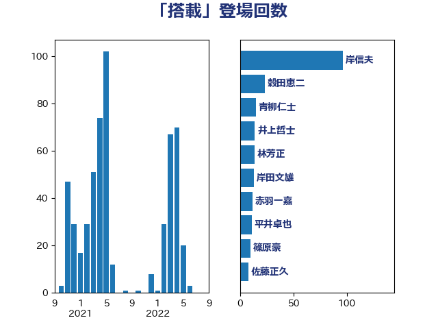

単語「搭載」

| 岸信夫 | 自由民主党 | 96 回 |
| 穀田恵二 | 日本共産党 | 23 回 |
| 青柳仁士 | 日本維新の会 | 15 回 |
| 井上哲士 | 日本共産党 | 14 回 |
| 林芳正 | 自由民主党 | 14 回 |
| 岸田文雄 | 自由民主党 | 13 回 |
| 赤羽一嘉 | 公明党 | 12 回 |
| 平井卓也 | 自由民主党 | 11 回 |
| 篠原豪 | 立憲民主党 | 10 回 |
| 佐藤正久 | 自由民主党 | 8 回 |
| 菅義偉 | 自由民主党 | 8 回 |
| 城井崇 | 立憲民主党 | 6 回 |
| 石川博崇 | 公明党 | 6 回 |
| 宮本徹 | 日本共産党 | 5 回 |
| 柿沢未途 | 無所属 | 5 回 |
| 武田良太 | 自由民主党 | 5 回 |
| 浅田均 | 日本維新の会 | 5 回 |
| 緒方林太郎 | 無所属 | 5 回 |
| 重徳和彦 | 立憲民主党 | 5 回 |
| 小池晃 | 日本共産党 | 4 回 |
| 岡田克也 | 立憲民主党 | 4 回 |
| 斉藤鉄夫 | 公明党 | 4 回 |
| 杉久武 | 公明党 | 4 回 |
| 森山浩行 | 立憲民主党 | 4 回 |
| 福山哲郎 | 立憲民主党 | 4 回 |
| 吉田統彦 | 立憲民主党 | 3 回 |
| 山添拓 | 日本共産党 | 3 回 |
| 浜口誠 | 国民民主党 | 3 回 |
| 熊田裕通 | 自由民主党 | 3 回 |
| 礒崎哲史 | 国民民主党 | 3 回 |
| 金子恭之 | 自由民主党 | 3 回 |
| 井上英孝 | 日本維新の会 | 2 回 |
| 佐藤茂樹 | 公明党 | 2 回 |
| 大野泰正 | 自由民主党 | 2 回 |
| 室井邦彦 | 日本維新の会 | 2 回 |
| 小西洋之 | 立憲民主党 | 2 回 |
| 平将明 | 自由民主党 | 2 回 |
| 後藤祐一 | 立憲民主党 | 2 回 |
| 末松義規 | 立憲民主党 | 2 回 |
| 柴田巧 | 日本維新の会 | 2 回 |
| 水岡俊一 | 立憲民主党 | 2 回 |
| 浅野哲 | 国民民主党 | 2 回 |
| 玉木雄一郎 | 国民民主党 | 2 回 |
| 田村憲久 | 自由民主党 | 2 回 |
| 萩生田光一 | 自由民主党 | 2 回 |
| 鈴木敦 | 国民民主党 | 2 回 |
| 鬼木誠 | 立憲民主党 | 2 回 |
| 三浦信祐 | 公明党 | 1 回 |
| 和田政宗 | 自由民主党 | 1 回 |
| 堀井巌 | 自由民主党 | 1 回 |
| 塩川鉄也 | 日本共産党 | 1 回 |
| 塩田博昭 | 公明党 | 1 回 |
| 宮澤博行 | 自由民主党 | 1 回 |
| 小田原潔 | 自由民主党 | 1 回 |
| 山谷えり子 | 自由民主党 | 1 回 |
| 市村浩一郎 | 日本維新の会 | 1 回 |
| 平木大作 | 公明党 | 1 回 |
| 志位和夫 | 日本共産党 | 1 回 |
| 新垣邦男 | 立憲民主党 | 1 回 |
| 本庄知史 | 立憲民主党 | 1 回 |
| 杉尾秀哉 | 立憲民主党 | 1 回 |
| 杉本和巳 | 日本維新の会 | 1 回 |
| 松川るい | 自由民主党 | 1 回 |
| 松野博一 | 自由民主党 | 1 回 |
| 榛葉賀津也 | 国民民主党 | 1 回 |
| 池下卓 | 日本維新の会 | 1 回 |
| 河野義博 | 公明党 | 1 回 |
| 泉健太 | 立憲民主党 | 1 回 |
| 浦野靖人 | 日本維新の会 | 1 回 |
| 渡辺周 | 立憲民主党 | 1 回 |
| 片山さつき | 自由民主党 | 1 回 |
| 牧島かれん | 自由民主党 | 1 回 |
| 猪口邦子 | 自由民主党 | 1 回 |
| 玄葉光一郎 | 立憲民主党 | 1 回 |
| 畦元将吾 | 自由民主党 | 1 回 |
| 石井章 | 日本維新の会 | 1 回 |
| 石川大我 | 立憲民主党 | 1 回 |
| 磯崎仁彦 | 自由民主党 | 1 回 |
| 福田達夫 | 自由民主党 | 1 回 |
| 空本誠喜 | 日本維新の会 | 1 回 |
| 藤巻健太 | 日本維新の会 | 1 回 |
| 輿水恵一 | 公明党 | 1 回 |
| 青木愛 | 立憲民主党 | 1 回 |
| 高野光二郎 | 自由民主党 | 1 回 |
| 鳩山二郎 | 自由民主党 | 1 回 |